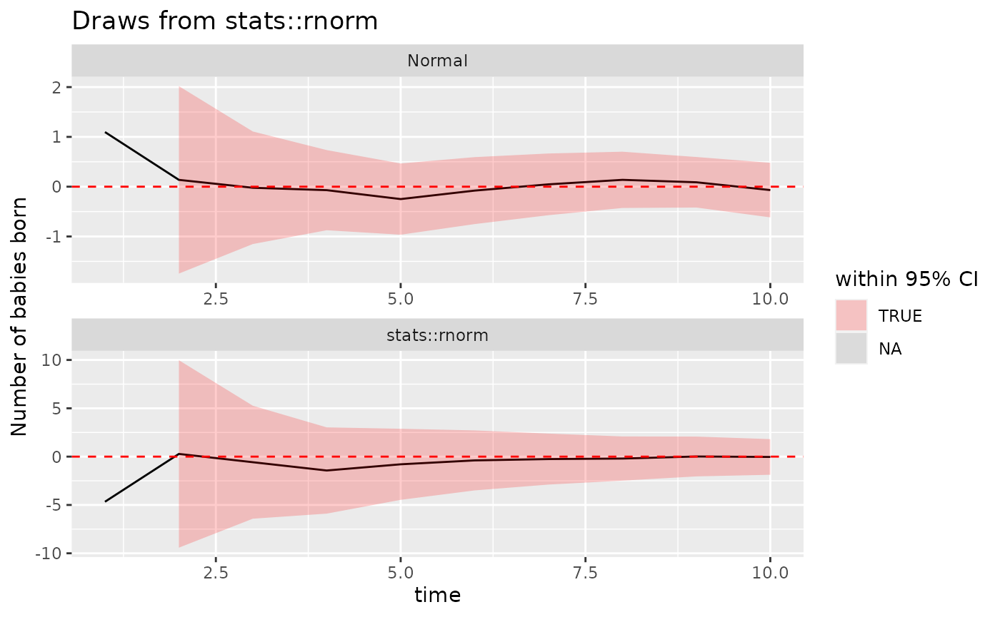

my-vignette
my-vignette.RmdHere is the function. It is important because …
p_normal_given_event(0.999, 10, 2)
#> [1] 1.545246e-18
draw_lln_with_func_facet1 <- function(n = 1000, mean_of_func, func, ...) {
print(n)
provided_function_name <- ifelse(
is.call(func), deparse(func[[1]]),
deparse(substitute(func))
)
print(provided_function_name)
# build a dataframe of time, value and average
# iteratively populate the dataframe.
# the time will increase from 1 to n,
# the value will be a random draw from a normal (0,1)
# and the average will be the
# average of the elements from 1 to the current time
df <- data.frame(
time = 1:n,
value = rnorm(n, ...), # func(n, ...),
average = NA,
theoretical_mean = mean_of_func,
type = provided_function_name,
lower = 0,
upper = 0,
color = "blue"
)
for (i in 1:n) {
df$average[i] <- mean(df$value[1:i])
variance <- stats::var(df$value[1:i])
interval <- 1.96 * sqrt(variance / i)
df$lower[i] <- mean(df$value[1:i]) - interval
df$upper[i] <- mean(df$value[1:i]) + interval
color <- ifelse(df$average[i] > mean_of_func, "green", "red")
}
# df |> head()
df2 <- data.frame(
time = 1:n,
value = stats::rnorm(n, 0, 1),
average = NA, theoretical_mean = 0,
type = "Normal",
lower = 0,
upper = 0,
color = "blue"
)
for (i in 1:n) {
df2$average[i] <- mean(df2$value[1:i])
variance <- stats::var(df2$value[1:i])
interval <- 1.96 * sqrt(variance / i)
df2$lower[i] <- mean(df2$value[1:i]) - interval
df2$upper[i] <- mean(df2$value[1:i]) + interval
color <- ifelse(df$average[i] > mean_of_func, "green", "red")
}
# df2 |> head()
# combine df1 and df2
big_df <- rbind(df, df2)
# print(big_df |> head())
dummy2 <- data.frame(type = c(provided_function_name, "Normal"), Z = c(mean_of_func, 0))
# Plot
x <- big_df |>
ggplot2::ggplot(ggplot2::aes(x = .data$time, y = .data$average)) +
ggplot2::geom_line() +
ggplot2::geom_ribbon(
ggplot2::aes(
ymin = .data$lower,
ymax = .data$upper,
fill = .data$lower <= 0 & .data$upper >= 0
),
color = NA, linetype = "dashed",
alpha = 0.2
) +
ggplot2::scale_fill_manual(values = c("red", "blue"), name = "within 95% CI") +
# ggplot2::geom_point() +
# scale_color_viridis(discrete = TRUE) +
ggplot2::ggtitle(paste("Draws from", provided_function_name)) +
# theme_ipsum() +
ggplot2::ylab("Number of babies born") +
ggplot2::geom_hline(
data = dummy2, linetype = "dashed", color = "red",
ggplot2::aes(yintercept = .data$Z)
) +
ggplot2::facet_wrap(~ .data$type, ncol = 1, scales = "free")
return(x)
}
draw_lln_with_func_facet1(n = 10, mean_of_func = 0, func = stats::rnorm, mean = 0, sd = 2)
#> [1] 10
#> [1] "stats::rnorm"
#> Warning in max(ids, na.rm = TRUE): no non-missing arguments to max; returning
#> -Inf
#> Warning in max(ids, na.rm = TRUE): no non-missing arguments to max; returning
#> -Inf
# make a simple plot in base r
plot(1:10, 1:10)